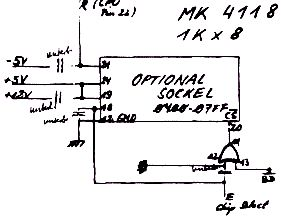

Nascom Journal |
6/80 7/80 |
Schon für ca. DM 70,– kann man den Nascom 1 um 1k Speicherplatz erweitern, wenn man den freien EPROM-Sockel (IC 39) benutzt. Es sind nur sehr wenige Leitungsänderungen vorzunehmen. Installiert man entsprechende Umschalter, so ist das System auch weiterhin mit zusätzlichen EPROMs zu benutzen, man kann entsprechende Programme vor dem „Einbrennen“ in EPROM sogar am „richtigen Platz“ testen (0400 bis 07FF ), was für nicht verschiebliche Programme ein ungeheurer Vorteil ist. Aber auch bei fester Verdrahtung bietet ein zusatzlicher Bereich von 1k schon große Vorteile, vor allem für diejenigen, die sich zunächst vor der Ausgabe einiger Hundert Mark für eine normale Erweiterung scheuen. (Zumal kein verstärktes Netzteil notwendig ist!)
Am einfachsten lassen sich die notwendigen Anschlüsse folgendermaßen bewerkstelligen:
Zunächst nimmt man IC 44 aus der Fassung. Man biegt Pin 12 heraus und
lötet ihn mit einer kurzen Leitung an Masse. Am MK 4118 (erhältlich bei
MK-Systemtechnik) biegt man Pin 18,19 und 21 heraus. Am MK 4118 werden
Pin 19 und 24 mit einem kurzen Drahtstück verbunden. Pin 18 verbindet
man mit dem freigewordenen Anschluß am Sockel des IC 44. Nun muß nur
noch Pin 21 mit dem
WR Ausgang der CPU
verbunden werden, und der Zusatzspeicher ist einsatzbereit.
Um mit dem Nascom 1 einigermaßen interessante Graphik zu erzeugen, ohne den Character Generator auswechseln zu müssen, ist es notwendig,
Mit geringen Veränderungen an der Hanrdware ist das folgendermaßen möglich.
Günter Böhm, _________________ ____
__ Karlsruhe __
Tel.: ____/ ______
| Seite 19 von 52 |
|---|